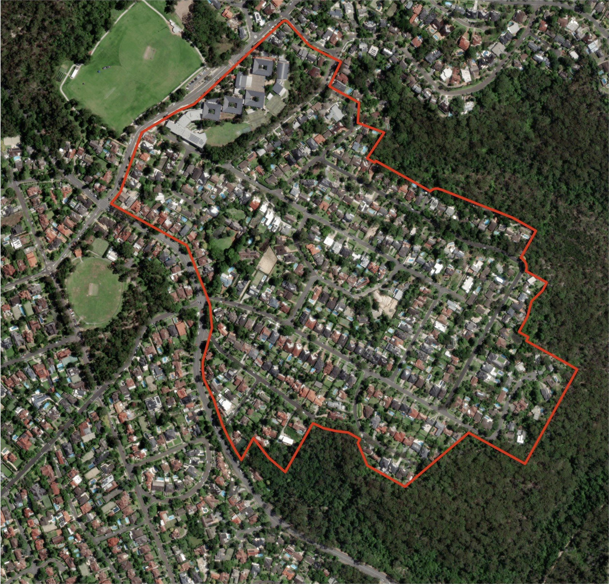
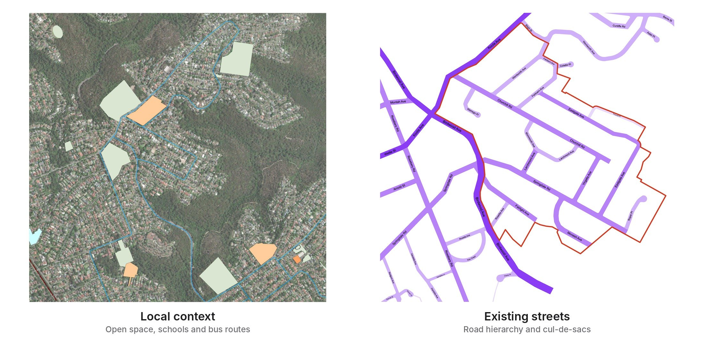
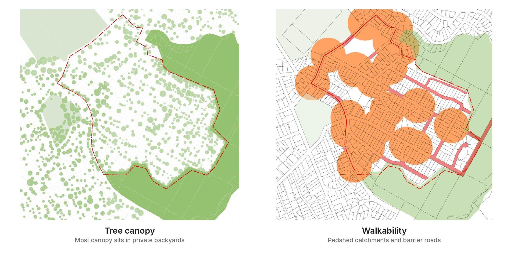
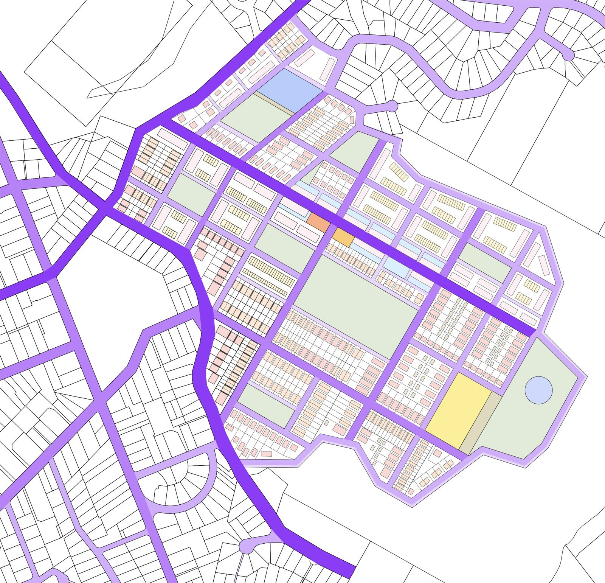
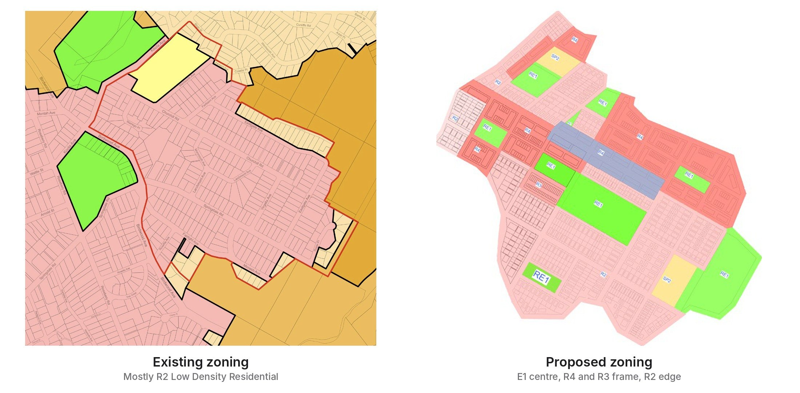
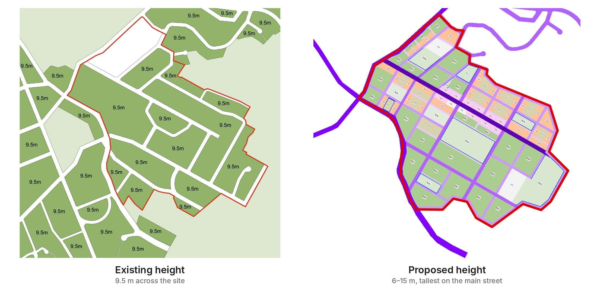
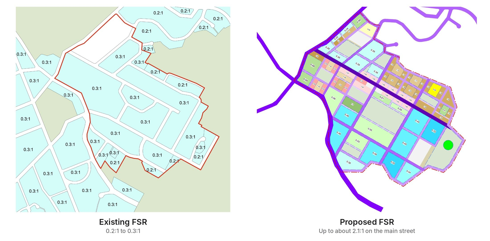

Reconnecting Homes
An urban design for East Killara, a low-density suburb on the edge of Garigal National Park in Ku-ring-gai. Cul-de-sac streets make most trips car-dependent, and most of the tree canopy sits in private backyards. The plan reconnects homes with a walkable street grid, a mixed-use main street, new school and community facilities, and a “Green Necklace” of parks along the bush edge.
📍 East Killara · Ku-ring-gai
site area
57 ha
Detached homes bordered by Garigal National Park.
of tree canopy in private backyards
38%
Green streets and new parks bring canopy back into public space.
peak building height
15 m
Up from a flat 9.5 m; tallest on the main street, stepping down to the bush.
peak floor space ratio
2.1:1
Up from 0.2–0.3:1; density gathers on the main street, low at the edge.

The site.
57 ha of detached homes in East Killara, wrapped by Garigal National Park.

Context and streets.
Schools, parks and buses sit around the edge; inside, cul-de-sacs make walks long.

Canopy and walkability.
Most trees are private, and much of the site is beyond a short walk to shops and buses.

Built form plan.
A new street grid with an east–west main street, lined with apartments and terraces that step down to detached homes at the bush edge.

Zoning, before and after.
Low-density R2 becomes a mixed-use centre framed by medium- and high-density homes.

Height, before and after.
A flat 9.5 m limit becomes heights that peak on the main street and step down to the bush.

FSR, before and after.
Density rises from 0.2–0.3:1 to about 2.1:1 on the main street, and stays low at the edge.
Project highlights
Reinforcement learning
PedLight-SAC
Fairer signals for pedestrians.
Trained in SUMO on two Anzac Parade crossings and compared with SCATS.

GIS
Mapping Equity
Who can reach amenities in Blacktown.
Hot spot analysis compared with population density and IRSAD.

Flood resilience
Bridging Community
Linked rooftops for Windsor.
Everyday shared spaces that become shelter and escape routes in a flood.